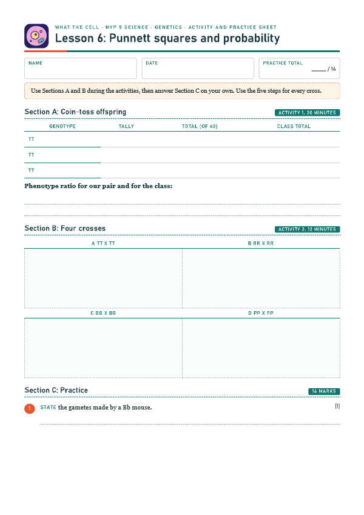

By the end of the lesson you can
- Draw a Punnett square in five clear steps
- Predict the genotypes and phenotypes of offspring
- Express results as ratios, percentages and probabilities
- Explain why real results differ from predicted ones
Keys: arrows or a presentation clicker move the slides, F for full screen. Slides with a red dot have a video or simulation.
Videos (all 5 minutes or less)
- 4:21
Punnett Squares
FuseSchool. While you watch: Where do the gametes go on the grid? Slide 9.
Simulations
- Lab
Print and practise

Activity and practice sheet
Used in the lesson’s activities, with practice questions. Your teacher has the answers.
Download (PDF)Lesson 6 slides
All 19 slides in one file, to read again or print. The video buttons on the slides open YouTube.
Download the slides (PDF)Revising? The Revision tab on the unit page has the unit notes and review.
Notes: Punnett squares and probability
carrier
Tt plants carry the short allele without showing it, so two tall plants can have a short offspring. For example: how short came back in Mendel's 2nd generation.
independent
One result does not change the next one. For example: a coin has no memory.
Key words
| Punnett square | a grid showing how gametes combine |
|---|---|
| cross | breeding two organisms |
| ratio | compares numbers of offspring types, e.g. 3 : 1 |
| probability | chance from 0 to 1, e.g. 0.25 |
| carrier | heterozygous; has a recessive allele but does not show it |
| offspring | the young of parents |
| independent | each offspring is a new chance |